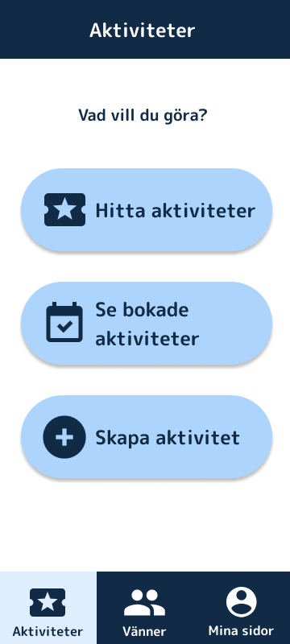
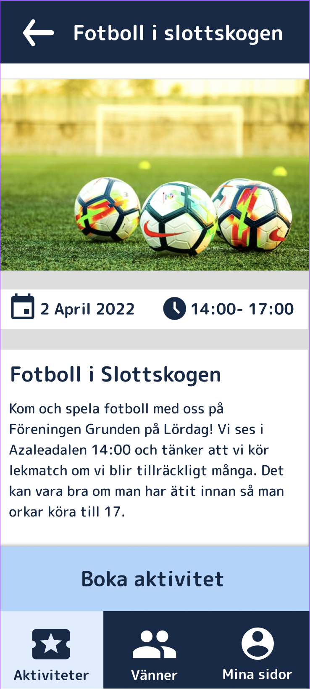

01 · Master thesis
A master's thesis built on WCAG AAA and the principle that no design decision is made without the people it's for.


The shipped concept: a calm, high-contrast home screen with one clear question — Vad vill du göra? (“What do you want to do?”) — and an activity built around big, legible cards.
Föreningen Grunden is a daily activities centre in Gothenburg for people with intellectual disabilities. It gives the people of Föreningen Grunden work experience, activities and community.
For my master's thesis in Interaction Design at Chalmers, my thesis partner and I set out to design an app that helps the people of Föreningen Grunden find and book activities and, through that, strengthen community and social participation.
The hard part wasn't the feature list. It was making something that genuinely worked for a group whose needs vary enormously, and who are too often designed around rather than designed with.
The last thing we wanted to ship was something that, in the end, wouldn't work for the people it was for.
So we put user studies at the heart of the entire project. We spent the majority of our time on testing and iteration, on one firm principle: no design decision would be made without validation from the target group.
We ran workshops, interviews and observations with actual users at Grunden, including people with visual impairments, memory difficulties and other cognitive variations. We learned the language, routines and barriers that never show up in a brief.
Cognitive factors and visual impairments meant accessibility couldn't be a layer added at the end. We made it the brief: it had to be readable, calm, forgiving, and obvious, for a wide spectrum of abilities.
We sketched on paper and built low-to-high fidelity prototypes in Figma, deliberately rough at first, so testing could reshape them before we got attached.
Interviews, observations and hands-on sessions with participants. Between each round we changed the design, then brought it back. We kept going until people could complete tasks comfortably and on their own.
The final concept was evaluated against WCAG AAA and, more importantly, against reality, testing every key flow with the people it was designed for.
Many participants needed extra attention to accessibility because of visual impairments, memory difficulties and other cognitive variations, so we held the design to WCAG AAA — the highest level. It set concrete, checkable rules for text size, colour contrast, navigation structure and interaction patterns, and put clarity and predictability ahead of aesthetic complexity.
Large text and strong navy-on-white / white-on-navy contrast that clears AAA, so the interface stays legible for low vision.
Big tap targets, icon + plain-language label, and a single clear action, reducing cognitive load and the chance of getting lost.
The same layout, colours and navigation everywhere, so learning one screen means you've learned them all.
Soft light-blue cards and warm icons make the app feel inviting and safe rather than like an administrative tool.
Activities are coded with simple, recognisable icons and short words — so participants can recognise what they're looking for without reading dense text.
Empathy. The result is an app that's functional, accessible and intuitive for a user group whose needs are frequently overlooked in digital product development.
The art of listening, and reading between the lines. It isn't always easy to say what you need, or what works best for you. That makes it all the more important to know what to listen for and to spot the pain points that aren't said out loud.